Création d'un VST
1. Création du sujet
Ouvrir l’acquisition Static
Dans le panneau Resources, onglet Subjects, sélectionner Create a blank subject. Entrer le nom du futur Template (Pour les projets validés CPP, entrer le nom de l'étude).
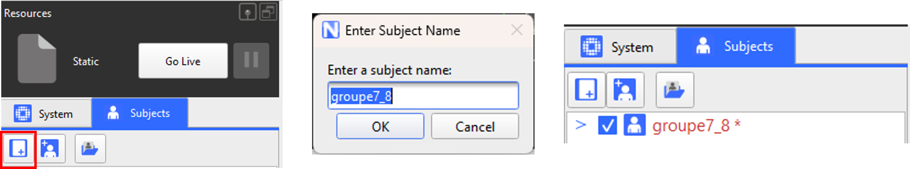
Attention, toujours travailler sur la même frame !!!
2. Création des segments
Dans le panneau Tools, onglet Subject Preparation
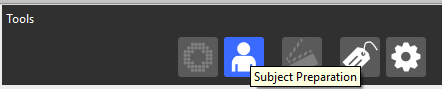
Dans Labeling Template Builder créer les segments (pelvis, femurD, tibiaD, piedD, femurG, tibiaG, piedG).
Commencer par le pelvis
Il est plus simple de se placer face au sujet
-
Indiquer le nom et cliquer sur create
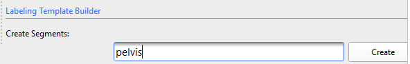
-
Sélectionner le marqueur origine du segment
-
Sélectionner les autres marqueurs pour former :
- L’axe principal (plus longue distance depuis l’origine)
- L’axe secondaire (direction différente que marqueur précédent)
- Le marqueur additionnel (autre direction)
-
Recliquer sur create et le segment est terminé (Le cube correspond à l'origine du segment)
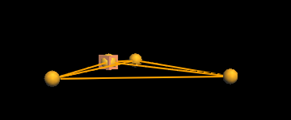
-
Dans l’onglet Subjects, étendre le menu déroulant, les marqueurs et le segment créé apparaissent.
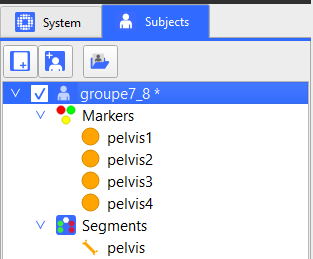
Faire de même pour les autres segments. Il est préférable d’avoir un marqueur commun à chaque segment.
3. Renommer les marqueurs
Une fois le modèle terminé, nommer les marqueurs selon le marqueur set défini. Noms à adapter si le markerset est différent.
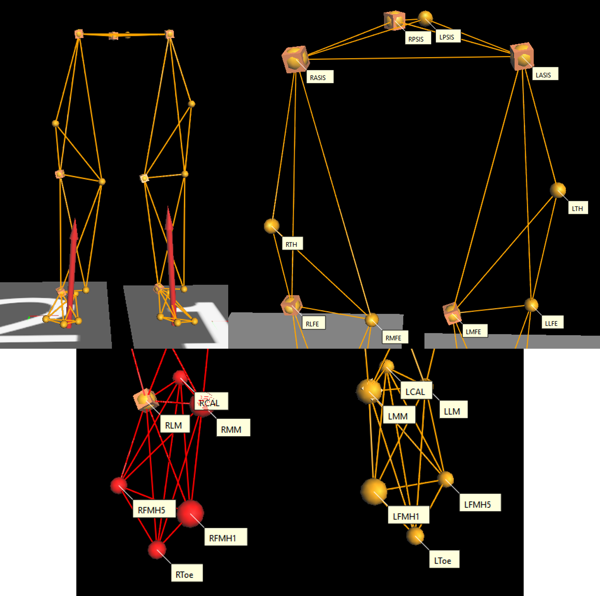
Pour différencier le côté droit et gauche, changer la couleur des marqueurs (CTRL + clic gauche pour sélectionner les marqueurs). Cliquer sur Color et modifier la couleur. Changer le radius des marqueurs médiaux (RMFE, LMFE, RMM, LMM, RFMH1, LFMH1).
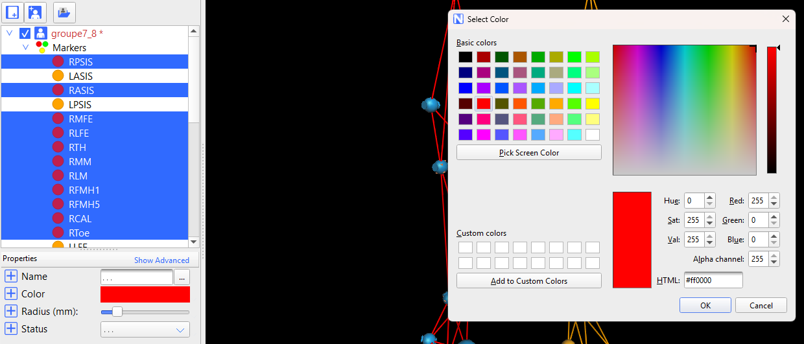
Si certains marqueurs ne sont présents que pendant la statique les indiquer comme « optional » ou « calibration only »
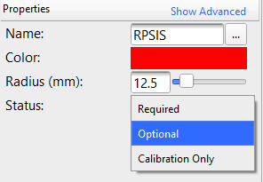
4. Relier les segments
Dans Link segments, définir le type d’articulation (e.g., ball joint) et cliquer sur Link pour relier les segments (du proximal vers le distal).
-
Choisir le segment parent (pelvis)
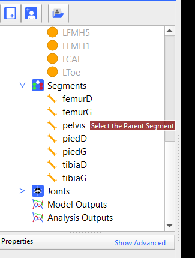
-
Choisir le segment enfant. Pelvis → femurD → tibiaD → piedD. Faire la même chose pour le côté gauche
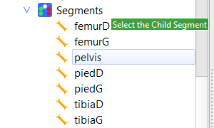
-
Une fois l’opération terminée, les articulations apparaissent
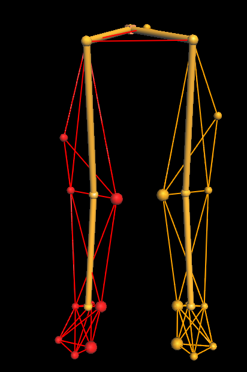
Le modèle est fini, à cette étape le nom du modèle doit apparaitre en noir. S’il est rouge, une étape est manquante ou erreur est apparue. Il est préférable de recommencer de zéro.
5. Finalisation du VST
Onglet Tools > pipeline > Current pipeline, sélectionner Calibrate Labeling skeleton static
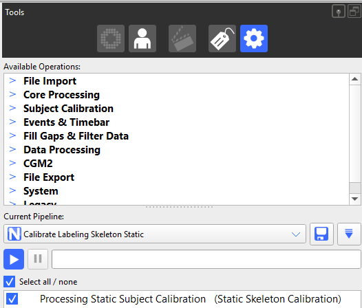
Dans le menu déroulant available operation > subject calibration, double cliquer sur Set autolabel pose et update skeleton parameters. Tout apparait dans le Current pipeline, et cliquer sur play.
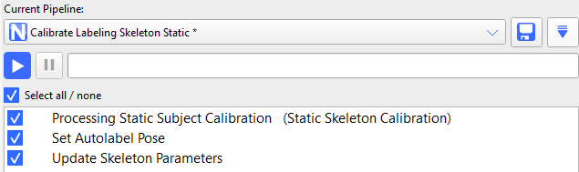
Si une calibration fonctionnelle est réalisée, faire la même chose en sélectionnant create labelling skeleton ROM à la place, et ajouter set autolabel pose et update skeleton parameters.
Sauvegarder le sujet comme template : clic droit sur le sujet et Save labelling skeleton as template.